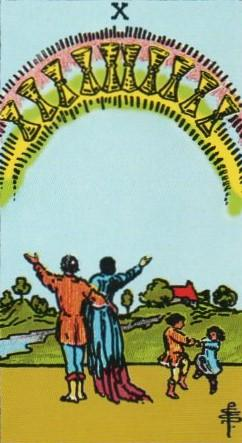
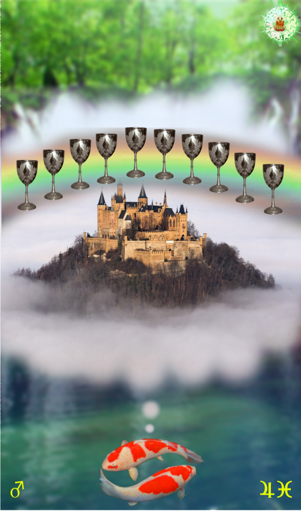
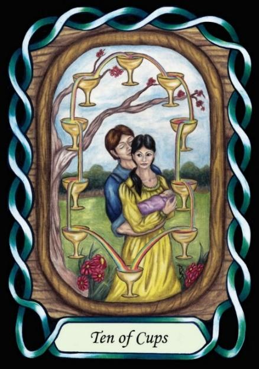

Ten of Cups



Sign |
|
Twelve: unseen realm |
|
Sign Ruler |
|
Element |
Water: emotions |
Modality |
|
Symbol |
Fish |
Decan |
|
Decan Ruler |
|
Time |
March 11: 20 |
Dreamers Pisces III
A Master of the unseen realm, the last decan of the zodiac, is ruled by Jupiter and Mars, and so will take a proactive role teaching and promoting knowledge of the unseen world, but will only teach the Apprentice, and guide, support and encourage the Journeyman. This is the third and final initiation of the spiritual path.
Goldschneider Personology
Continuing the Pisces dream of a pleasant life journey, the Martial influence on this decan makes them a little more proactive, and they will often attempt to educate the ignorant and insensitive people. They are strongly persuasive.
Meaning: Selling the dream
RWS Imagery
A Pisces-three sells the dream of happy rural family life to his family, as his children dance joyously.
Pymander Imagery
The Pisces fish dream of a better world, perhaps one beyond this mortal realm.
Summary
Represents spiritual mastery, proactive guidance, and sharing wisdom.